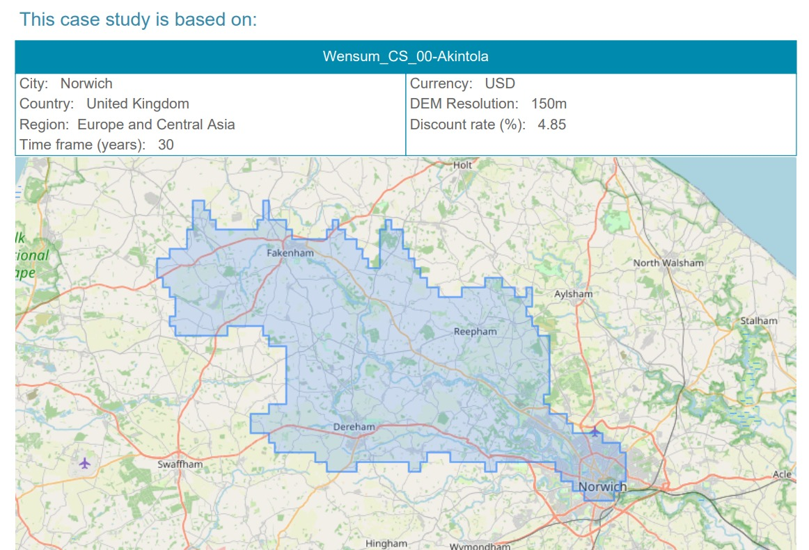

Flood Mitigation - Course-Based Project
A coursework project involving the development of case studies on nature-based solutions for mitigating flood risk in different locations around the world.
My name is Oladoyin Abidemi Akintola. My journey began from the Federal University of Technology Akure where I studied Quantity Surveying. My undergraduate degree yielded questions on the built environment which makes up my today's interaction with the built industry, education, and governance. My current projects entails enabling quality construction management through cost, time, and quality, sustainable development, structuring construction governance and interaction between industry, policies, and academia.
I am currently building Ekolog and I cannot wait for you to see the value of this development for future of Africa's construction...

A coursework project involving the development of case studies on nature-based solutions for mitigating flood risk in different locations around the world.